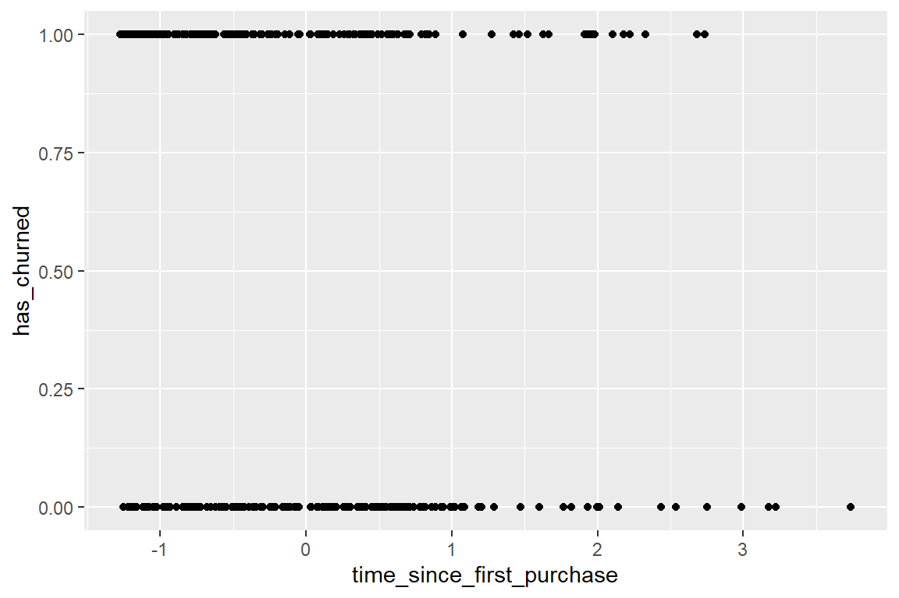
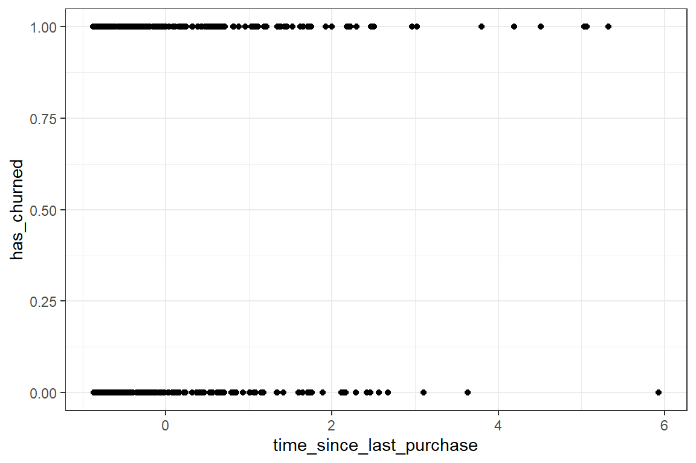
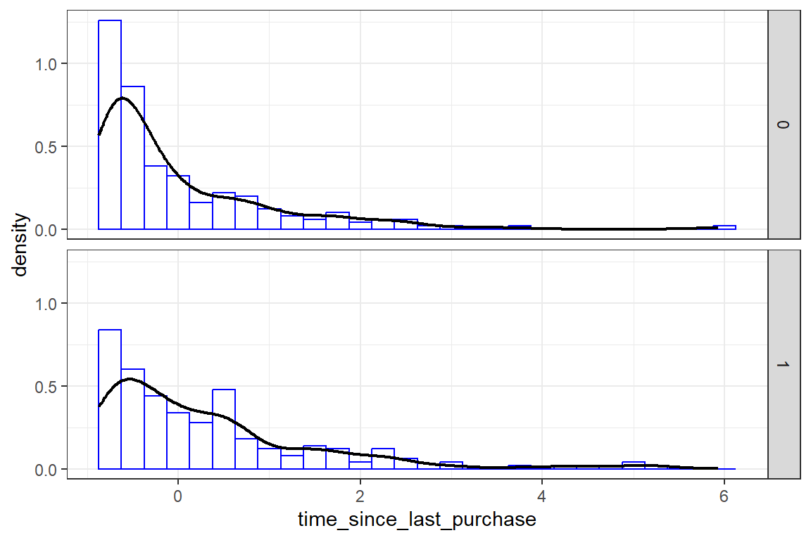
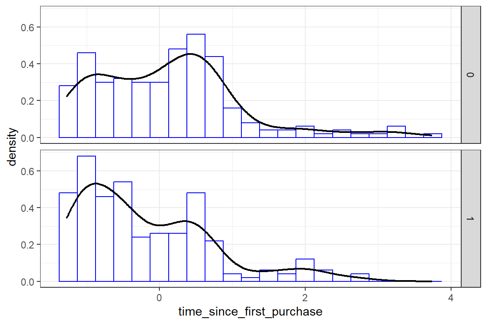
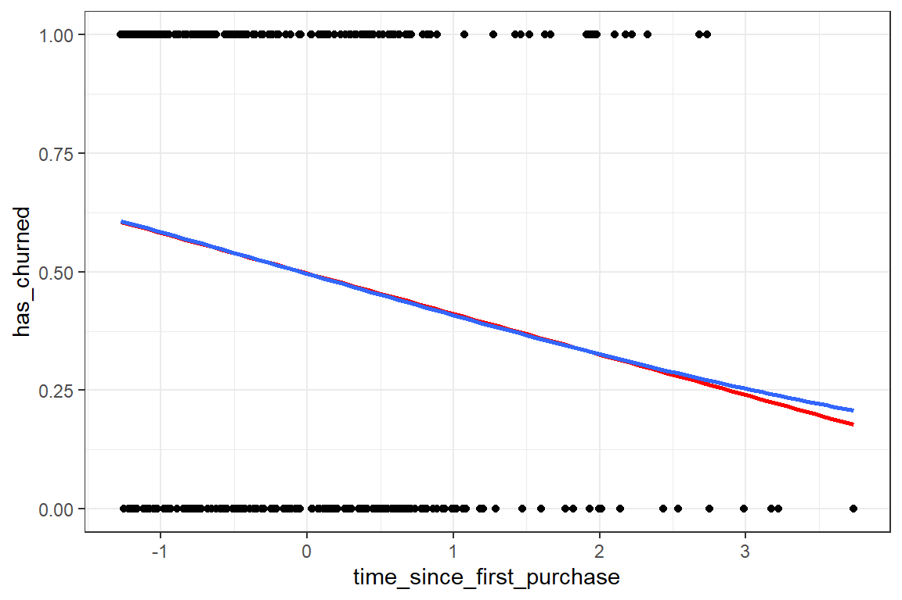
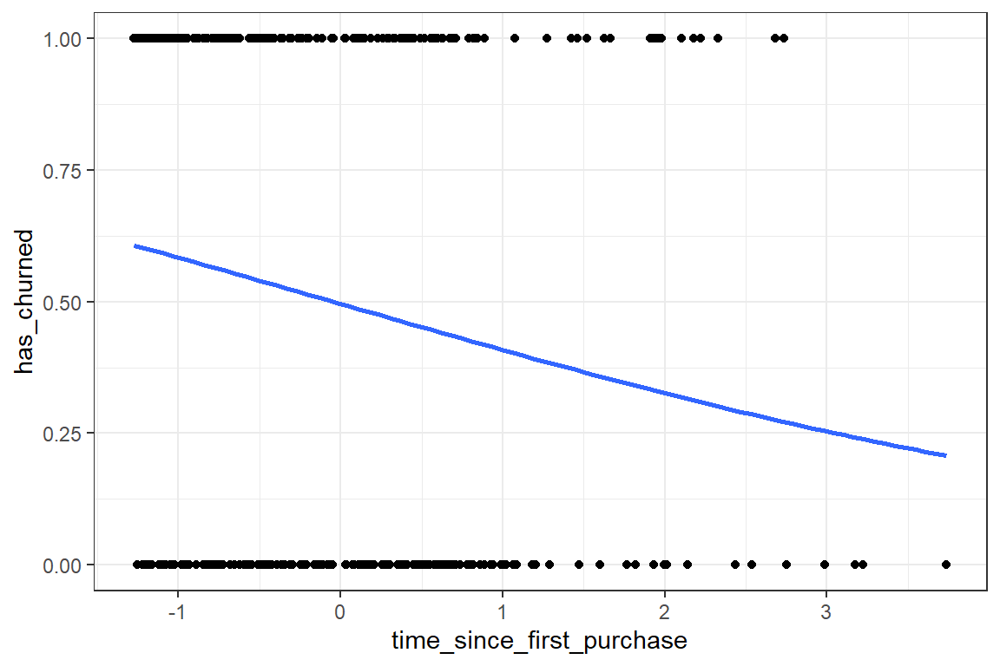
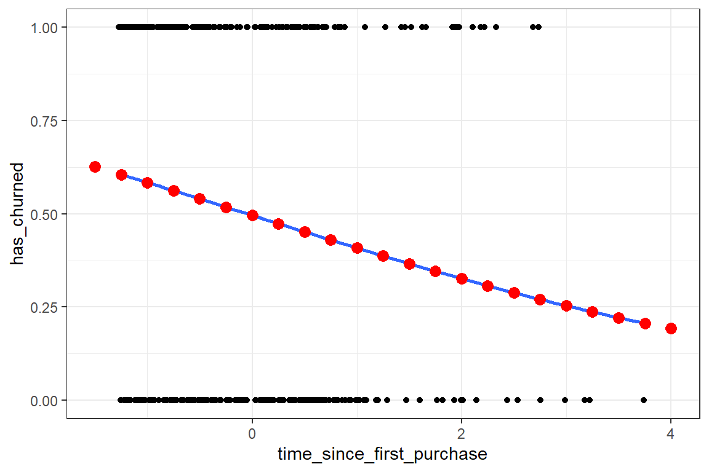
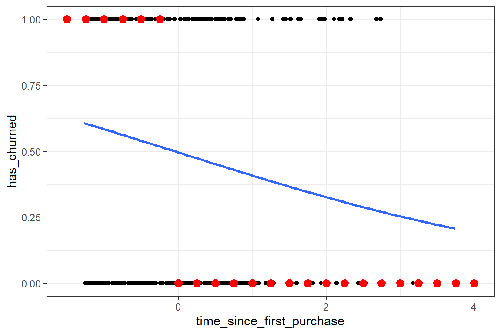
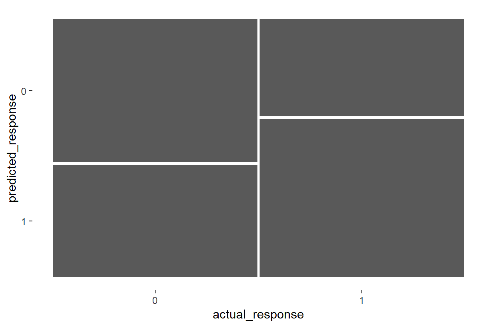

churn <- rio::import(file = "adat/churn.fst")
names(churn)
#> [1] "has_churned" "time_since_first_purchase"
#> [3] "time_since_last_purchase"10 Logisztikus regresszió
A logisztikus regresszió céljait tekintve megegyezik a diszkriminancia elemzéssel, de sokkal robusztusabb, azaz kevesebb alkalmazási feltétellel rendelkezik. Használható a logisztikus regresszió akkor is, ha a független változók között kategorikus változók is előfordulnak, illetve a normalitásra és homoszkedaszticitásra vonatkozó feltétel megsértésre sem érzékeny a módszer.
A logisztikus regressziónak 3 típusa van:
- binomiális logisztikus regresszió: a függő változónk dichotóm, csak két értéke van,
- multinominális logisztikus regresszió: a függő változónk olyan kategorikus változó, amelynek kettőnél több értéke van,
- ordinális logisztikus regresszió: a függő változó ordinális skálán mért (a jegyzetben ez az eset nem szerepel).
10.1 Binomiális logisztikus regresszió
A korábban megismert lineáris regresszió során numerikus változókkal dolgoztunk. Mind a függő, mind a független változóink numerikusak voltak. A binomiális logisztikus regresszió során a függő változónk dichotóm, azaz csak két értéke lehet. A független változóink lehetnek numerikusak és kategorikusak is. Tekinthetjük úgy, hogy a logisztikus regresszió során a függő változó értékei 0 vagy 1 lehet, és a logisztikus modellünk a független változók segítségével becsüli meg azz az esélyt, hogy az adott esemény bekövetkezik-e vagy sem (illetve, hogy milyen eséllyel következik be).
10.1.1 Példa: ügyfelek elvándorlása
Példa adatbázisunk egy európai pénzügyi szolgáltató vállalat 2006-os ügyfél elvándorlásáról szól. Összesen 400 sorunk van, amelyek mindegyike egy-egy ügyfelet képvisel. Ha az ügyfél az adott időszak alatt az összes számláját lezárta, akkor úgy tekintetjük, hogy elvándorolt, és az adott oszlopban (has_churned) ezt egy 1-sel jelölték. Ha az ügyfélnek az időszak végén még mindig volt nyitott számlája, a has_churned oszlop 0-t tartalmaz. Látni fogjuk, hogy az elsőre kézenfekvőnek számító logikai változó használata helyett az 1 és a 0 használata sokkal praktikusabb lesz az ábrák megjelenítése és a teljes eljárás során. A két magyarázó változó az az idő, amióta az ügyfél először vásárolt szolgáltatást (time_since_first_purchase), és az az idő, amióta utoljára vásárolt szolgáltatást (time_since_last_purchase). Ezek jelentése rendre: az ügyféllel való kapcsolat hossza, illetve az ügyfél tevékenységének frissessége. E két idő oszlopok valójában negatív értékeket is tartalmaz, mivel azokat titoktartási okokból standardizálták. Bővebb információt itt találunk: https://www.rdocumentation.org/packages/bayesQR/topics/Churn
Nyissuk meg az adatbázist:
10.1.2 Miért van szükésg logisztikus regresszióra?
10.1.2.1 A magyarázó változó megismerése
Amikor a függő változó logikai típusú (dichotóm, azaz 0 vagy 1), a vizsgált változó összes pontja az \(y=0\) és az \(y=1\) egyeneseken helyezkedik el, ami sokszor megnehezíti a helyzet megértését.
Tekintsük meg kétdimenziós pontdiagramon két magyarázó változó értékeinek függvényében a függő változó eloszlását. Első esetben azt vizsgáljuk meg, hogyan függ az ügyfél elvándorlása (has_churned) attól az időtől, amióta az ügyfél először vásárolt szolgáltatást (time_since_first_purchase).
# kétdimenziós pontdiagramon x tengely: time_since_first_purchase y
# tengely: has_churned
library(ggplot2)
ggplot(churn, aes(time_since_first_purchase, has_churned)) + geom_point()
Vizsgáljuk meg a másik magyarázó változó hatását. Azaz azt, hogy az ügyfél elvándorlása hogyan függ az attól az időtől, amióta utoljára vásárolt szolgáltatást (time_since_last_purchase).
# kétdimenziós pontdiagramon x tengely: time_since_last_purchase y
# tengely: has_churned
ggplot(churn, aes(time_since_last_purchase, has_churned)) + geom_point() +
theme_bw()
A fenti két kétdimenziós pontdiagramon látható, hogy az ügyfelek elvándorlása hogyan függ az ügyféllel való kapcsolat hosszától és az ügyfél tevékenységének frissességétől. Valójában a fenti ábrákról nehéz lenne bármilyen következtetést levonni. Ezért most a numerikus magyarázó változók eloszlását vizsgáljuk meg a függő változó két csoportjában (0 vagy 1). Először rajzoljunk a time_since_last_purchase magyarázó változóra hisztogramot, amelyet a függő változó két értéke (0 és 1) alapján osztunk fel.
# hisztogramm rajzolása
ggplot(churn, aes(time_since_last_purchase, y = after_stat(density))) +
# hisztogrammá alakítjuk, a binwidth 0.25
geom_histogram(binwidth = 0.25, fill = "white", col = "blue") + geom_density(linewidth = 0.8) +
# a has_churned változó alapján felosztjuk a hisztogramokat
facet_grid(rows = vars(has_churned)) + theme_bw()
Rajzoljuk meg a hisztogramot a másik magyarázó változóra is (time_since_first_purchase).
# hisztogramm rajzolása
ggplot(churn, aes(time_since_first_purchase, y = after_stat(density))) +
geom_histogram(binwidth = 0.25, fill = "white", col = "blue") + geom_density(linewidth = 0.8) +
facet_grid(rows = vars(has_churned)) + theme_bw()
A time_since_last_purchase ábrán az elvándorolt ügyfelek eloszlása jobbra tolódott (az elvándorlók általában hosszabb ideje nem vásároltak). A time_since_first_purchase esetében az ellenkező igaz: az elvándorlók rövidebb kapcsolati idővel rendelkeznek.
A magyarázó változók eloszlásának megjelenítéséve kicsit jobban megismertük az adatainkat. Most már készen állunk a logisztikus regresszió megismerésére.
10.1.2.2 A lineáris és a logisztikus modell ábrázolása
Mielőtt belemerülünk a részletekbe, egyszerűen grafikusan hasonlítsuk össze a lineáris és a logisztikus regresszió használatával kapott előrejelzést. Használjunk egyetlen magyarázó változót (time_since_first_purchase) és a függő változónk természetesen a dichotóm has_churned változó lesz. Tudjuk, a lineáris regresszió a függő változó átlagos értékét becsüli meg a független változók segítségével. A logisztikus regresszió során a függő változó dichotóm, és a modellünk a független változók segítségével becsüli meg az az esélyt, hogy az adott esemény bekövetkezik-e vagy sem.
A lineáris regresszió során az ábrán egy egyenes vonal fog megjelenni (kék vonal), míg logisztikus regressziónál egy S-alakú görbe (kék görbe).
# lineáris regressziós egyenes és logisztikus regressziós S-görbe
ggplot(churn, aes(time_since_first_purchase, has_churned)) + geom_point() +
# lineáris regresszió
geom_smooth(method = "lm", se = FALSE, color = "red") + # logisztikus regresszió, binomiális eloszlással geom_smooth(method
geom_smooth(method = "lm", se = FALSE, color = "red") + # logisztikus regresszió, binomiális eloszlással =
geom_smooth(method = "lm", se = FALSE, color = "red") + # logisztikus regresszió, binomiális eloszlással "lm",
geom_smooth(method = "lm", se = FALSE, color = "red") + # logisztikus regresszió, binomiális eloszlással se
geom_smooth(method = "lm", se = FALSE, color = "red") + # logisztikus regresszió, binomiális eloszlással =
geom_smooth(method = "lm", se = FALSE, color = "red") + # logisztikus regresszió, binomiális eloszlással FALSE,
geom_smooth(method = "lm", se = FALSE, color = "red") + # logisztikus regresszió, binomiális eloszlással color
geom_smooth(method = "lm", se = FALSE, color = "red") + # logisztikus regresszió, binomiális eloszlással =
geom_smooth(method = "lm", se = FALSE, color = "red") + # logisztikus regresszió, binomiális eloszlással "red")
geom_smooth(method = "lm", se = FALSE, color = "red") + # logisztikus regresszió, binomiális eloszlással +
geom_smooth(method = "lm", se = FALSE, color = "red") + # logisztikus regresszió, binomiális eloszlással #
geom_smooth(method = "lm", se = FALSE, color = "red") + # logisztikus regresszió, binomiális eloszlással logisztikus
geom_smooth(method = "lm", se = FALSE, color = "red") + # logisztikus regresszió, binomiális eloszlással regresszió,
geom_smooth(method = "lm", se = FALSE, color = "red") + # logisztikus regresszió, binomiális eloszlással binomiális
geom_smooth(method = "lm", se = FALSE, color = "red") + # logisztikus regresszió, binomiális eloszlással eloszlással
geom_smooth(method = "glm", se = FALSE, method.args = list(family = binomial)) +
theme_bw()
Látható, hogy a két modell hasonló előrejelzéseket ad több helyen is helyen, de vegyük észre a logisztikus modell trendjében van egy kis görbületet.
Azt gondolhatnánk első pillanatban, hogy a lineáris modell használata megfelelő lehet az egyes értékek előrejelzésére. Futtassuk is le a lineráris modellt, és tekintsük a paramétereit.
# lineáris modell
lm.1 <- lm(has_churned ~ time_since_first_purchase, data = churn)
coef(lm.1) # csak az együtthatók
#> (Intercept) time_since_first_purchase
#> 0.49706212 -0.08547789A coef() függvény csak a becsült együtthatókat szolgáltatja, a tengelymetszetet és a meredekséget. Ezek alapján könnyen kiszámolhatjuk bármelyik x értékhez a modell előrejelző értékeit, amelyek természetesen törtértékűek lesznek, annak ellenére, hogy a függő változó lehetséges értéke csak 0 vagy 1 lesz. Ezeket az előrejelzéseket úgy is felfoghatjuk, mint annak valószínűségét, hogy az ügyfél el fog vándorolni.
A lineáris modell azonban nem nem alkalmas a valószínűségek kezelésére, a modell előrejelzései nem lesznek helyesek. Az xlim= és ylim= tengelyhatárok beállítása (a rajzterület kicsinyítésével) megmutatja a lineáris modell használatának problémáját. A grafikon bal alsó részén a modell negatív valószínűségeket jósol. A jobb felső részen a modell egynél nagyobb valószínűségeket jósol. Mindkét helyzet lehetetlen.
A megoldás a logisztikus regressziós modellek használata, amelyek az általánosított lineáris modellek egy fajtája, és akkor használatosak, ha a válaszváltozó logikai. Míg a lineáris modellek egyenes vonalat követő előrejelzéseket eredményeznek, addig a logisztikus modellek egy logisztikus görbét követő, S alakú előrejelzéseket eredményeznek.
# lineáris modell és logisztikus modell összehasonlítása
# kiterjesztett x és y tengelyhatárok
ggplot(churn, aes(time_since_first_purchase, has_churned)) + geom_point() +
# xlim(-10, 10) + ylim(-0.2, 1.2) + geom_smooth(method = 'lm', se
# = FALSE, col = 'red', fullrange=T) + logisztikus regresszió,
# binomiális eloszlással
geom_smooth(method = "glm", se = FALSE, method.args = list(family = binomial),
fullrange = T) + theme_bw()
A fenti kinagyított ábrán látható, hogy a logisztikus regressziós görbe soha nem megy nulla alá vagy egy fölé. Ezt a görbét úgy kell értelmezni, hogy ha a legelső vásárlás óta eltelt standardizált idő nagyon kicsi, akkor az elvándorlás valószínűsége közel van az 1-hez. Amikor az első vásárlás óta eltelt idő nagyon magas, a valószínűség közel van a 0-hoz. Vagyis azok az ügyfelek, akik régen vaásroltak először vásároltak, kisebb valószínűséggel vándorolnak el.
10.1.2.3 Logiszikus regresszió a glm() segítségével
A grafikus ábrázolás után építsünk modellt, amely leírja, hogy az ügyféllel való kapcsolat hossza hogyan befolyásolja az elvándorlást.
A lineáris regresszió és a logisztikus regresszió az általánosított lineáris modellek (GLM, Generalised Linear Modell) speciális esetei. A lineáris regresszió azt feltételezi, hogy a reziduumok normális (Gauss) eloszlást követnek. Ezzel szemben a logisztikus regresszió azt feltételezi, hogy a reziduumok binomiális eloszlást követnek.
Futtassunk le egy logisztikus regressziót a has_churned és time_since_first_purchase változókra a churn adatbázison. A kapott modellt mdl_churn_vs_relationship-nek nevezzük el.
# modell illesztése a logisztikus regresszióval a `churn` adatbázison
# a `time_since_first_purchase` változóra
mdl_churn_vs_relationship <- glm(has_churned ~ time_since_first_purchase,
data = churn, family = binomial)
# eredmények megtekintése
mdl_churn_vs_relationship
#>
#> Call: glm(formula = has_churned ~ time_since_first_purchase,...
#> data = churn)
#>
#> Coefficients:
#> (Intercept) time_since_first_purchase
#> -0.01518 -0.35479
#>
#> Degrees of Freedom: 399 Total (i.e. Null); 398 Residual
#> Null Deviance: 554.5
#> Residual Deviance: 543.7 AIC: 547.7Mint korábban lineáris regresszió esetén, most is két együtthatót kapunk, egy tengelymetszetet és egy másik értéket a numerikus magyarázó változóra. Az értelmezés egy kicsit más, erre később térünk vissza.
Megjegyezzük, hogy korábban végrehajtott lineáris regresszió is végrehajtható a glm() függvény segítségével.
# lineáris regresszió a glm() segítségével
lm.2 <- glm(has_churned ~ time_since_first_purchase, data = churn, family = gaussian)
# ereedmények megtekintése
lm.2
#>
#> Call: glm(formula = has_churned ~ time_since_first_purchase,...
#> data = churn)
#>
#> Coefficients:
#> (Intercept) time_since_first_purchase
#> 0.49706 -0.08548
#>
#> Degrees of Freedom: 399 Total (i.e. Null); 398 Residual
#> Null Deviance: 100
#> Residual Deviance: 97.35 AIC: 575.9A fenti outputban a family argumentum értéke gaussian, ami azt jelenti, hogy a lineáris regresszióra kerül sor. A family argumentum értéke binomial, ha logisztikus regressziót szeretnénk illeszteni.
10.1.3 Előrejelzés a logisztikus modell segítségével
Végezzünk előrejelzést a logisztikus modell segítségével. Négy fő módszer van a logisztikus regressziós modell előrejelzésének kifejezésére. Előrejelzés
- valószínűségel
- legvalószínűbb kimenettel
- esélyaránnyal
- log esélyaránnyal.
10.1.3.1 Valószínűségek
Mivel a válaszváltozó vagy “igen” (1) vagy “nem” (0), előrejelzést készíthetünk az “igen” valószínűségéről. Könnyen kiszámolhatjuk és Itt kiszámíthatjuk és ábrázolod ezeket a valószínűségeket.
Tegyük fel, hogy a logisztikus modell rendelkezésre áll:
# az illesztett logisztikus modell
mdl_churn_vs_relationship <- glm(has_churned ~ time_since_first_purchase,
data = churn, family = binomial)Szükségünk van a magyarázó változó néhány lehetséges értékére, amelyet a modell előrejelzésére használunk. Az explanatory_data adatbázisban a time_since_first_purchase változó néhány elképzelt értéke található.
# a magyarázó változó ezen értékeire végzünk előrejelzést
explanatory_data <- structure(list(time_since_first_purchase = c(-1.5,
-1.25, -1, -0.75, -0.5, -0.25, 0, 0.25, 0.5, 0.75, 1, 1.25, 1.5, 1.75,
2, 2.25, 2.5, 2.75, 3, 3.25, 3.5, 3.75, 4)), class = c("tbl_df", "tbl",
"data.frame"), row.names = c(NA, -23L))Szükség van egy kiinduló ábrára, amely a has_churned és a time_since_first_purchase változókat tartalmazza, egy sima glm vonallal.
# kiinduló ábra
plt_churn_vs_relationship <- ggplot(churn, aes(time_since_first_purchase,
has_churned)) + geom_point() + geom_smooth(method = "glm", se = FALSE,
method.args = list(family = binomial)) + theme_bw()
plt_churn_vs_relationshipA következő lépésekhez tehát ez a három változó áll rendelkezésre:
- a
mdl_churn_vs_relationshipváltozó, amely ahas_churnedéstime_since_first_purchaselogisztikus regresszió modellje, - az
explanatory_dataváltozó, amely egy, a magyarázó változó lehetséges értékeit tartalmazó adattbázis, - a
plt_churn_vs_relationshippontdiagram, amely y tengeleyen ahas_churnedváltozót, x tengelyen atime_since_first_purchaseváltozót jeleníti meg, egy illesztettglmgörbe segítségével.
Ahhoz, hogy előrejelzést készítsünk logisztikus modellel, ugyanazt a technikát használjuk, mint a lineáris modellek esetében. Már rendelkezésre áll a az explanatory_data adattábla, a magyarázó változó lehetséges értékeivel, ezek alapján hozzunk létre gey új prediction_data adatbázist, amely már az előrejelezett értékeket is tartalmazza. Ezt a predict() segítségével számítjuk ki, de modellobjektum és a magyarázó adatok átadása mellett a predikcióhoz a type="response" argumentumot is használnunk kell, mert így kapjuk meg a válószínűségeket.
library(tidyverse)
# hozzunk létre egy adatbázist a becsült valószínűségekkel
prediction_data <- explanatory_data %>%
mutate(has_churned = predict(object = mdl_churn_vs_relationship, newdata = explanatory_data,
type = "response"))
# nézzük meg az első néhány sort
prediction_data
#> # A tibble: 23 × 2
#> time_since_first_purchase has_churned
#> <dbl> <dbl>
#> 1 -1.5 0.626
#> 2 -1.25 0.605
#> 3 -1 0.584
#> 4 -0.75 0.562
#> 5 -0.5 0.540
#> 6 -0.25 0.518
#> # ℹ 17 more rowsAz előrejelzett valószínűségeket hozzáadhatjuk a grafikonhoz. A várakozásoknak megfelelően ezek a pontok követik a trendvonalat. Módosítsuk a plt_churn_vs_relationship ábrát, hogy hozzáadjuk ezeket a pontokat az ábrához, piros színnel és 3-as méretben.
# az ábra frissítése
ggplot(churn, aes(time_since_first_purchase, has_churned)) + geom_point() +
geom_smooth(method = "glm", se = FALSE, method.args = list(family = binomial)) +
theme_bw() + # előrejelzések hozzáadása a grafikonhoz, piros színnel és 3-as méretben theme_bw()
theme_bw() + # előrejelzések hozzáadása a grafikonhoz, piros színnel és 3-as méretben +
theme_bw() + # előrejelzések hozzáadása a grafikonhoz, piros színnel és 3-as méretben #
theme_bw() + # előrejelzések hozzáadása a grafikonhoz, piros színnel és 3-as méretben előrejelzések
theme_bw() + # előrejelzések hozzáadása a grafikonhoz, piros színnel és 3-as méretben hozzáadása
theme_bw() + # előrejelzések hozzáadása a grafikonhoz, piros színnel és 3-as méretben a
theme_bw() + # előrejelzések hozzáadása a grafikonhoz, piros színnel és 3-as méretben grafikonhoz,
theme_bw() + # előrejelzések hozzáadása a grafikonhoz, piros színnel és 3-as méretben piros
theme_bw() + # előrejelzések hozzáadása a grafikonhoz, piros színnel és 3-as méretben színnel
theme_bw() + # előrejelzések hozzáadása a grafikonhoz, piros színnel és 3-as méretben és
theme_bw() + # előrejelzések hozzáadása a grafikonhoz, piros színnel és 3-as méretben 3-as
theme_bw() + # előrejelzések hozzáadása a grafikonhoz, piros színnel és 3-as méretben méretben
geom_point(data = prediction_data, color = "red", size = 3)
Láthatjuk, hogy a pozitív válasz valószínűsége (az ügyfél elvándorlásának valószínűsége) a jóslatok természetes módja.
10.1.3.2 Legvalószínűbb kimenet
Amikor az eredményeket egy kevésbé szakmai közönségnek magyarázzuk, elképzelhető, hogy el szeretnénk kerülni a valószínűségek említését, és egyszerűen a legvalószínűbb kimenetet szeretnénk csupán publikálni. Azaz, ahelyett, hogy azt mondanánk, hogy egy ügyfél 60%-os valószínűséggel fog elvándorolni, azt mondjuk, hogy a legvalószínűbb kimenet az, hogy az ügyfél el fog vándorolni. Nyilván az egyszerűbb értelmezésnek megvan a maga költsége.
A legvalószínűbb kimenet egy egyszerűbb előrejelzés a válasz valószínűségeinek kiszámítása helyett. Ha az elvándorlás valószínűsége kisebb, mint 0,5, akkor a legvalószínűbb kimenetel az, hogy nem fognak elvándorolni. Ha a valószínűségük nagyobb, mint 0,5, akkor valószínűbb, hogy elvándorolnak. Ennek kiszámításához egyszerűen kerekítenünk kell a korábban előrejelzett valószínűségeket.
Frissítsük a prediction_data adatbázist úgy, hogy hozzáadjuk a legvalószínűbb elvándorlási kimenet oszlopát, vagyis a legvalószínűbb kimenetet.
# frissítsük az adatbázist
prediction_data <- explanatory_data %>%
mutate(
# adjuk hozzá az elvándorlási valószínűséget
has_churned = predict(mdl_churn_vs_relationship, explanatory_data, type = "response"),
# adjuk hozzá a legvalószínűbb elvándorlási kimenet oszlopot
most_likely_outcome = round(has_churned)
)A legvalószínűbb kimenetet úgy ábrázolhatjuk, hogy felhasználjuk az előrejelzési adatokat (most_likely_outcome). A régen belépett ügyfelek esetében a legvalószínűbb kimenetel az, hogy nem vándorolnak el. Ellenkező esetben a legvalószínűbb eredmény az, hogy elvándorolnak.
Módosítsuk a plt_churn_vs_relationship ábrát, és adjunk hozzá piros pontokat 3-as méretben.
# frissítsük az ábrát
ggplot(churn, aes(time_since_first_purchase, has_churned)) + geom_point() +
geom_smooth(method = "glm", se = FALSE, method.args = list(family = binomial)) +
theme_bw() + # Legvalószínűbb kimenet pontok hozzáadása a prediction_data-ból, piros színnel és 3-as méretben theme_bw()
theme_bw() + # Legvalószínűbb kimenet pontok hozzáadása a prediction_data-ból, piros színnel és 3-as méretben +
theme_bw() + # Legvalószínűbb kimenet pontok hozzáadása a prediction_data-ból, piros színnel és 3-as méretben #
theme_bw() + # Legvalószínűbb kimenet pontok hozzáadása a prediction_data-ból, piros színnel és 3-as méretben Legvalószínűbb
theme_bw() + # Legvalószínűbb kimenet pontok hozzáadása a prediction_data-ból, piros színnel és 3-as méretben kimenet
theme_bw() + # Legvalószínűbb kimenet pontok hozzáadása a prediction_data-ból, piros színnel és 3-as méretben pontok
theme_bw() + # Legvalószínűbb kimenet pontok hozzáadása a prediction_data-ból, piros színnel és 3-as méretben hozzáadása
theme_bw() + # Legvalószínűbb kimenet pontok hozzáadása a prediction_data-ból, piros színnel és 3-as méretben a
theme_bw() + # Legvalószínűbb kimenet pontok hozzáadása a prediction_data-ból, piros színnel és 3-as méretben prediction_data-ból,
theme_bw() + # Legvalószínűbb kimenet pontok hozzáadása a prediction_data-ból, piros színnel és 3-as méretben piros
theme_bw() + # Legvalószínűbb kimenet pontok hozzáadása a prediction_data-ból, piros színnel és 3-as méretben színnel
theme_bw() + # Legvalószínűbb kimenet pontok hozzáadása a prediction_data-ból, piros színnel és 3-as méretben és
theme_bw() + # Legvalószínűbb kimenet pontok hozzáadása a prediction_data-ból, piros színnel és 3-as méretben 3-as
theme_bw() + # Legvalószínűbb kimenet pontok hozzáadása a prediction_data-ból, piros színnel és 3-as méretben méretben
geom_point(aes(y = most_likely_outcome), data = prediction_data, color = "red",
size = 3)
A legvalószínűbb válaszadás nagyszerű módja annak, hogy a modell eredményeit egy nem szakmai közönséggel megosszuk.
10.1.3.3 Esélyarány
Van egy másik módja is a bináris válaszokról való beszélgetésnek, amelyet a szerencsejátékokban szoktak használni. Az esélyarány annak a valószínűsége, hogy valami megtörténik, osztva annak a valószínűségével, hogy nem történik meg.
\[Esélyhányados = \frac{P}{1-P}\]
\[Esélyhányados = \frac{0,25}{1-0,25} = \frac{1}{3}\]
Például a 0,25-ös valószínűség megegyezik a “három az egy ellen” esélyével, mert annak a valószínűsége, hogy az esemény nem következik be, 0,75, ami háromszor annyi.
Az esélyarányok tehát összehasonlítják valaminek a bekövetkezésének valószínűségét a be nem következés valószínűségével. Néha ezzel könnyebb érvelni, mint a valószínűségekkel, különösen akkor, amikor döntéseket kell hozni. Például, ha egy ügyfélnek 20%-os esélye van arra, hogy elvándoroljon, talán intuitívabb azt mondani, hogy “a nem elvándorlás esélye négyszer magasabb, mint az elvándorlás esélye”.
Frissítsük a prediction_data adatbázist, adjuk hozzá az esélyarány oszlopot.
# frissítsük az adatbázist
prediction_data <- explanatory_data %>%
mutate(
# adjuk hozzá az elvándorlási valószínűséget
has_churned = predict(mdl_churn_vs_relationship, explanatory_data, type = "response"),
# adjuk hozzá a legvalószínűbb elvándorlási kimenet oszlopot
most_likely_outcome = round(has_churned),
# Esélyarány hozzáadása
odds_ratio = has_churned / (1 - has_churned)
)Az esélyarány vizualizálásának az eredeti adatpontokkal nincs értelme, ezért új ábrára van szükségünk. A prediction_data használatával rajzoljon egy vonaldiagramot az odds_ratio és time_since_first_purchase változók alapján. Adjunk hozzá egy pontozott vízszintes vonalat az odds_ratio egyenlő 1-hez.
# # Predikciók ábrázolása, az esélyarány és a
# time_since_first_purchase változók alapján ggplot(data =
# prediction_data, aes(x = time_since_first_purchase, y =
# odds_ratio)) + # Vonal diagram geom_line() + # Egy szaggatott
# vízszintes vonal hozzáadása y = 1-hez geom_hline(yintercept = 1,
# linetype = 'dotted', linewidth=2) + theme_bw()Itt a szaggatott vonal, ahol az esélyhányados épp 1, azt jelzi, hogy hol ugyanolyan valószínűségű az elvándorlás, mint a nem elvándorlás. A jobb alsó sarokban az előrejelzések 1 alatt vannak, tehát az elvándorlás esélye kisebb, mint a nem elvándorlás esélye. A bal felső sarokban az elvándorlás esélye körülbelül másfélszer nagyobb, mint a nem elvándorlás esélye.
Az esélyarányok alternatívát jelentenek a valószínűségekhez képest, amelyek lehetővé teszik a pozitív és negatív válaszok összehasonlítását.
10.1.3.4 Log esélyarány
A valószínűségek és az esélyarányok egyik hátránya a logisztikus regressziós előrejelzések esetében az, hogy a jóslatok vonalai mindkét esetben görbültek. Ez megnehezíti annak a magyarázatát, hogy mi történik az előre jelzett értékkel, amikor változtatást hajtunk végre a magyarázó változón. Az esélyarányok logaritmusát (a “log esélyarányt”) lineáris kapcsolat jellemzi a jósolt válasz és a magyarázó változó között. Ez azt jelenti, hogy amikor a magyarázó változó megváltozik, nem látunk drámai változásokat a célváltozóban - csak lineáris változásokat.
Mivel a log esélyarány tényleges értékei kevésbé intuitívak, mint a (lineáris, nem logaritmikus) esélyarány, a megjelenítési célokra általában jobb az esélyarányt ábrázolni, és log-transzformációt alkalmazni az y-tengely skálájára.
Először frissítsük a prediction_data adatbázist, hogy hozzáadjuk a két módon kiszámított log esélyarányt. Számítsuk ki az esélyarányból, majd közvetlenül a predict() használatával.
# frissítsük az adatbázist
prediction_data <- explanatory_data %>%
mutate(
# adjuk hozzá az elvándorlási valószínűséget
has_churned = predict(mdl_churn_vs_relationship, explanatory_data, type = "response"),
# adjuk hozzá a legvalószínűbb elvándorlási kimenet oszlopot
most_likely_outcome = round(has_churned),
# Esélyarány hozzáadása
odds_ratio = has_churned / (1 - has_churned),
# adjuk hozzá a log esélyarányt az odds_ratio-ból
log_odds_ratio = log(odds_ratio),
# adjuk hozzá a log esélyarányt a predict() segítségével
log_odds_ratio2 = predict(mdl_churn_vs_relationship, explanatory_data)
)
# ereedmények megtekintése
prediction_data
#> # A tibble: 23 × 6
#> time_since_first_pur…¹ has_churned most_likely_outcome odds...
#> <dbl> <dbl> <dbl> ...
#> 1 -1.5 0.626 1 ...
#> 2 -1.25 0.605 1 ...
#> 3 -1 0.584 1 ...
#> 4 -0.75 0.562 1 ...
#> 5 -0.5 0.540 1 ...
#> 6 -0.25 0.518 1 ...
#> # ℹ 17 more rows
#> # ℹ abbreviated name: ¹time_since_first_purchase
#> # ℹ 2 more variables: log_odds_ratio <dbl>, log_odds_ratio2 <...Valójában a predict() a log esélyhányadost adja vissza, ha nem adjuk meg a type= argumentumot. Hasonlítsuk össze a log esélyhányados kiszámításának két különböző módját, és győződjünk meg róla, hogy világos a fenti kód.
A logisztikus regressziós esélyhányadosok egyik szép tulajdonsága, hogy logaritmikus skálán lineárisan változnak a magyarázó változóval. Az ábrán ehhez a scale_y_log10-et kall használnunk. Módosítsuk a diagramot úgy, hogy logaritmikus y-skálát használunk.
# # frissítsük az ábrát ggplot(prediction_data,
# aes(time_since_first_purchase, odds_ratio)) + geom_line() +
# geom_hline(yintercept = 1, linetype = 'dotted', linewidth=2) + #
# Logaritmikus y-skála használata scale_y_log10() + theme_bw()A becsült log esélyarány és a magyarázó változó közötti lineáris kapcsolat megkönnyíti a magyarázó változó változásáról szóló érvelésünket.
Összefoglalva azt mondhatjuk, hogy a becslés fenti 4 módjának mindegyik módja különböző előnyökkel jár. A legvalószínűbb kimenet a legkönnyebben érthető, mert a válasz mindig “igen” vagy “nem”, de ebből hiányzik a pontosság. A valószínűségek és az esélyhányadosok még mindig meglehetősen könnyen érthetőek az adatokban jártas közönség számára. A nem lineáris előrejelzések azonban megnehezítik a következtetést arról, hogy a magyarázó változó változásai hogyan változtatják meg a választ. A log esélyhányados nehezen értelmezhető az egyedi értékek esetében, de a magyarázó változókkal való lineáris kapcsolat megkönnyíti a változásokkal kapcsolatos érvelést.
10.1.4 A logisztikus regresszió illeszkedésének mérésére
Most a logisztikus regressziós modellek teljesítményét értékeljük. A lineáris modellekhez rajzolt diagnosztikai ábrák kevésbé hasznosak a logisztikus esetben. Ehelyett a konfúziós mátrixokat fogjuk megvizsgálni.
10.1.4.1 A konfúziós mátrix
A konfúziós mátrix (néha konfúziós táblázatnak nevezik) az összes teljesítménymutató alapja a kategorikus válaszú modellek esetében (ilyen a logisztikai regresszió). Esetünkben, ahol két lehetséges válasz van (elvándorlás vagy nem elvándorlás), összesen négy kimenet van.
- Az ügyfél elvándorolt, és a modell azt jósolta.
- Az ügyfél elvándorolt, de a modell nem jósolta ezt.
- Az ügyfél nem vándorolt el, de a modell azt jósolta.
- Az ügyfél nem vándorolt el, és a modell azt jósolta.
Két rossz eset van. Ha azt jósoljuk, hogy az ügyfél elvándorolt, de valójában nem, azt hamis pozitívnak nevezzük. Ha azt jósoljuk, hogy az ügyfél nem vándorolt el, pedig igen, azt hamis negatívnak nevezzük. Az egyes kimenetek számadatait konfúziós mátrixnak nevezzük.
A valóságos válaszokat az adatbázis has_churned oszlopából ismerhetjük meg. Nevezzük ezeket actual_response-nak. A “legvalószínűbb” jósolt válaszokat a modellből nyerhetjük ki, ezeket nevezzük predicted_response-nak. Hozzon létre egy táblázatot a tényleges és jósolt válaszvektorok számából. Rendelje hozzá az outcomes objektumhoz.
# tényleges válaszok az adatbázis has_churned oszlopából
actual_response <- churn$has_churned
# a legvalószínűbb jósolt válaszok a modellből
predicted_response <- round(fitted(mdl_churn_vs_relationship))
# gyakorisági tábla létrehozása
outcomes <- table(predicted_response, actual_response)
# nézzük az eredményeket
outcomes
#> actual_response
#> predicted_response 0 1
#> 0 112 76
#> 1 88 124A konfúziós mátrix név ijesztően hangzik, de ez csak egy számlálótábla. A fitted() függvény ugyanúgy működik logisztikus modelleken, mint a lineáris modelleken. Visszaadja az adathalmaz minden egyes megfigyelésének előre jelzett értékeit. Ezek az illesztett értékek a valószínűségek lesznek. Ahhoz, hogy a legvalószínűbb eredményt kapjuk, az értékeket nullára vagy egyre kell kerekítenünk. Végül táblázat segítségével megkapjuk az egyes értékkombinációk számosságát. Ez a korábban említett konfúziós mátrix. Helyesen megjósoltuk, hogy 112 ügyfél nem vándorolt el, és 124 ügyfél elvándorolt. Összesen 88 téves pozitív és 76 téves negatív eredmény volt.
A konfúziós mátrixot mozaikdiagramon is szemléltethetjük. A {yardstick} csomag segítségével egyszerűen ábrázolhatjuk a konfúziós mátrixot és kiszámíthatja az egyes teljesítménymutatókat. A táblázatot a conf_mat() segítségével átalakítjuk egy yardstick konfúziós mátrix objektummá.
library(yardstick)
# konvertálja az outcomes-t egy yardstick konfúziós mátrixba
confusion <- yardstick::conf_mat(outcomes)
confusion
#> actual_response
#> predicted_response 0 1
#> 0 112 76
#> 1 88 124Ezután a lineáris modellobjektumokhoz hasonlóan egyszerűen meghívhatjuk az autoplot()-ot. Az autoplot() mozaikos ábrát rajzol a konfúziós mátrixból.
# ábrázoljuk a konfúziós mátrixot
autoplot(confusion)
A fenti ábra értelmezéséhez először is nézzük meg az oszlopszélességeket. Az egyes oszlopok szélessége arányos a tényleges értékek egyes kategóriáiban lévő megfigyelések hányadával. Mivel körülbelül 200 tényleges elvándorlás és 200 tényleges nem elvándorlás van, így minden oszlop szélessége azonos. Az egyes oszlopok az előrejelzett megfigyelések megfelelő hányadát mutatják. Itt a tényleges elvándorlások kicsivel több mint egynegyedét (76 ) jósolta a modell nem elvándorlásnak, így a jobb felső blokk a második oszlop magasságának kicsivel több mint egynegyedét teszi ki.
10.1.4.2 A logisztikus modell teljesítményének mérése
A yardstick konfúziós mátrix objektum lehetővé teszik a teljesítménymutatók ábrázolását és kinyerését is.
# a teljesítménymutatók kiírása a konfúziós mátrixhoz
summary(confusion, event_level = "second")
#> # A tibble: 13 × 3
#> .metric .estimator .estimate
#> <chr> <chr> <dbl>
#> 1 accuracy binary 0.59
#> 2 kap binary 0.18
#> 3 sens binary 0.62
#> 4 spec binary 0.56
#> 5 ppv binary 0.585
#> 6 npv binary 0.596
#> # ℹ 7 more rowsA summary() meghívása a konfúziós mátrixon rengeteg modellteljesítmény-mérő adatot ad vissza. Mivel nulla és egy értéket használtunk a válaszértékekhez faktor helyett, a második oszlop a pozitív választ tartalmazza, ezért az event_level="second" beállítást használjuk.
Három metrikát vizsgálunk meg. Az első a pontosság (accuracy), ami a helyes előrejelzések aránya. A második az érzékenység (sensitivity), ami azoknak a megfigyeléseknek az aránya, ahol a tényleges válasz igaz volt, ahol a modell is azt jósolta, hogy igaz volt. A harmadik a specificitás (specificity), ami azoknak a megfigyeléseknek az aránya, ahol a tényleges válasz hamis volt, ahol a modell is azt jósolta, hogy hamis volt. A nagyobb pontosság, érzékenység és specificitás jobb.
- Pontosság
-
Az első metrika a modell pontossága. Ez a helyes előrejelzések aránya. Vagyis a valódi negatívok száma plusz a valódi pozitívok száma, osztva a megfigyelések teljes számával. A nagyobb pontosság jobb. A helyes megfigyelések teljes száma száznegyvenegy plusz nyolcvankilenc. Ezt az összeget elosztjuk a megfigyelések teljes számával, ami a négy szám összege.
\[pontosság = \frac{TN + TP}{TN + FN + FP + TP}\]
# pontosság kiszámolása
summary(confusion, event_level = "second") %>%
slice(1)
#> # A tibble: 1 × 3
#> .metric .estimator .estimate
#> <chr> <chr> <dbl>
#> 1 accuracy binary 0.59
(112 + 124)/(112 + 76 + 88 + 124)
#> [1] 0.59- Érzékenység
-
Az érzékenység azoknak a megfigyeléseknek az aránya, ahol a tényleges válasz igaz volt, ahol a modell is azt jósolta, hogy igaz volt. Vagyis a valódi pozitív eredmények száma osztva a hamis negatív és a valódi pozitív eredmények összegével. A magasabb érzékenység jobb.
\[érzékenység = \frac{TP}{FN+TP}\]
# érzékenység kiszámolása
summary(confusion, event_level = "second") %>%
slice(3)
#> # A tibble: 1 × 3
#> .metric .estimator .estimate
#> <chr> <chr> <dbl>
#> 1 sens binary 0.62
(124)/(76 + 124)
#> [1] 0.62- Specificitás
-
A specificitás azoknak a megfigyeléseknek az aránya, ahol a tényleges válasz hamis volt, ahol a modell is azt jósolta, hogy hamis volt. Vagyis a valódi negatívok száma osztva a valódi negatívok és a hamis pozitívok összegével. Ismét elmondható, hogy a magasabb specificitás jobb, bár gyakran van egy olyan kompromisszum, ahol a specificitás javítása csökkenti az érzékenységet, vagy az érzékenység növelése csökkenti a specificitást.
\[érzékenység = \frac{TN}{TN+FP}\]
# érzékenység kiszámolása
summary(confusion, event_level = "second") %>%
slice(4)
#> # A tibble: 1 × 3
#> .metric .estimator .estimate
#> <chr> <chr> <dbl>
#> 1 spec binary 0.56
(112)/(88 + 112)
#> [1] 0.56